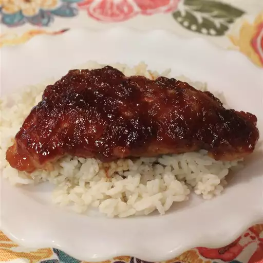

Best Cranberry Chicken

Description
My mom found this recipe for cranberry chicken thighs years ago. It's now a cheap and easy weeknight favorite at my house.
Ingredients
- 2 small onion, chopped
- 2 (8 ounce) can whole berry cranberry sauce
- 6 pounds chicken thighs
- 2 teaspoons dry mustard powder
Steps
- Preheat the oven to 400 degrees F (200 degrees C).
- Place onion and butter in a 9x13-inch baking dish.
- Bake in the preheated oven, stirring occasionally, until onion is translucent, about 15 minutes. Remove from the oven, push onion to one side, and arrange chicken thighs in the dish in a single layer. Return to the oven and bake for 25 minutes.
- Meanwhile, stir together cranberry sauce, ketchup, brown sugar, vinegar, and mustard powder in a bowl.
Remove the baking dish from the oven. Transfer cooked onions to cranberry mixture and stir until incorporated. Spoon over chicken thighs and return the baking dish to the oven.
- Bake until cranberry mixture is slightly caramelized and chicken is cooked through, about 20 more minutes. An instant-read thermometer inserted into the center of each thigh near the bone should read at least 165 degrees F (74 degrees C).
Homepage